تطوير الأداء المؤسسي والتحول الاستراتيجي — نفهم الواقع، نحدد الأولويات، ونساند التنفيذ.
نؤسس لما يستمر. شركة سعودية متخصصة في تطوير الأداء المؤسسي والتحول الاستراتيجي، تواصل مسيرة استشارية بدأت عام 2020 تحت اسم «مدد».
هوية مؤسسية تعكس تطوّر توجهها واتساع رؤيتها لدور الاستشارات في بناء المنظمات. نصمم حلولاً عملية في الاستراتيجية والحوكمة والهيكلة وإدارة المخاطر والتحول المؤسسي وتحسين الأداء، بما يربط التوصيات باحتياجات المنظمة ونتائجها.
نساند المنظمات في مراحل التطوير والتحول.
تطوير الاستراتيجيات والحوكمة والهياكل بما يدعم المستهدفات المؤسسية.
رفع كفاءة الأداء، ومواءمة التنفيذ مع التوجهات الاستراتيجية.
بناء هياكل ونماذج تشغيل تواكب مرحلة النمو أو التحول.
مجالس الإدارة والرؤساء التنفيذيون والقيادات العليا ومديرو الاستراتيجية والتطوير والحوكمة والمخاطر؛ لتطوير منظومات الحوكمة والأداء وإدارة مبادرات التحول.
أن نكون بيت خبرة سعودياً مرجعياً في تطوير الأداء والتحول المؤسسي، بحضور مؤثر في المملكة ودول الخليج.
تمكين المنظمات من تطوير أدائها عبر استشارات تجمع بين التحليل والتنفيذ، وتحوّل التحديات إلى قرارات أوضح وحلول قابلة للتطبيق.
تحليل منهجي وفهم متعمق
شفافية وموضوعية المشورة
ثقة وفهم مشترك للأهداف
خطوات عملية وتحسّن ملموس
تبدأ الاستشارة بفهم التحدي،وتكتمل قيمتها حين تصبح جزءاً من الحل.
نؤمن بأن قيمة الاستشارة تُقاس بما تُحدثه من تطور في منظومة العمل، وما تتركه من أثر يمتد إلى ما بعد انتهاء المشروع.
نبني أسس التوجه والتنظيم، ونرفع الجاهزية وندعم التحول.
نطوّر التوجهات والخطط الاستراتيجية وأطر قياس الأداء ومؤشراته، ونربط الأهداف المؤسسية بمسارات تنفيذ واضحة.
نصمم الهياكل التنظيمية ونماذج التشغيل، ونوضح الأدوار والصلاحيات، ونحسّن العمليات بما يناسب احتياج المنظمة.
نطوّر أطر الحوكمة والسياسات والإجراءات التي تعزز وضوح المسؤوليات وفاعلية الرقابة والمساءلة.
نحدد المخاطر ونقيّمها، ونبني الأطر والإجراءات التي تدعم جاهزية المنظمة واستمرارية أعمالها.
ننظم مبادرات التحول ونتابع تنفيذها، ونربطها بالأهداف والمستهدفات الاستراتيجية.
نساند المنظمات في معالجة تحديات الأداء وترتيب الأولويات، وبناء خطة عملية للتحسين والنمو.
من التشخيص إلى قياس النتائج.
نجمع المعلومات وندرس الوضع الراهن لتحديد الفجوات وفرص التطوير.
تحديد الفجوات وفرص التطويرنصوغ الحلول والتوصيات المناسبة لواقع المنظمة، ونحدد أولوياتها ومتطلبات تنفيذها.
حلول مرتبة حسب الأولويةنحوّل التوصيات إلى خطة بمسؤوليات وأطر زمنية واضحة، وندعم التنفيذ وفق نطاق العمل المعتمد.
خطة عمل ومسؤوليات واضحةنتابع التقدم ونراجع المخرجات، ونقيس النتائج وفق مؤشرات متفق عليها، ونختم بتقرير نهائي.
مؤشرات متفق عليها وتقرير نهائيلكل مرحلة غاية واضحة، ومخرجات تدعم المرحلة التالية.
حلول مصممة وفق واقع كل منظمة، لا قوالب جاهزة.
فهم للتحديات التنظيمية والاستراتيجية، وخبرة متراكمة منذ عام 2020.
وضوح في الطرح والتزام بالمسؤولية المهنية وموضوعية المشورة.
خطوات منظمة ومدروسة، لكل منها غاية ومخرجات.
قراءة المتغيرات المستقبلية عند بناء التوجهات واتخاذ القرارات.
ربط المخرجات الاستشارية بإمكانات التطبيق وقياس النتائج.
نحوّل التحليل إلى حلول عملية مرتبطة بواقع المنظمة وأهدافها.
تحليل منظم يساند القيادات في تحديد الأولويات واتخاذ قرارات مدروسة.
أدوار وعمليات أكثر وضوحاً، وربط أدق بين المسؤوليات والتنفيذ.
خطط ومبادرات تعزز قدرة المنظمة على التعامل مع التغيير ومواصلة التطور.
لنبدأ الحوارحول منظمتكم.
للتعرّف على خدمات لومنور ومناقشة احتياجات منظمتكم، يسعدنا تواصلكم معنا.